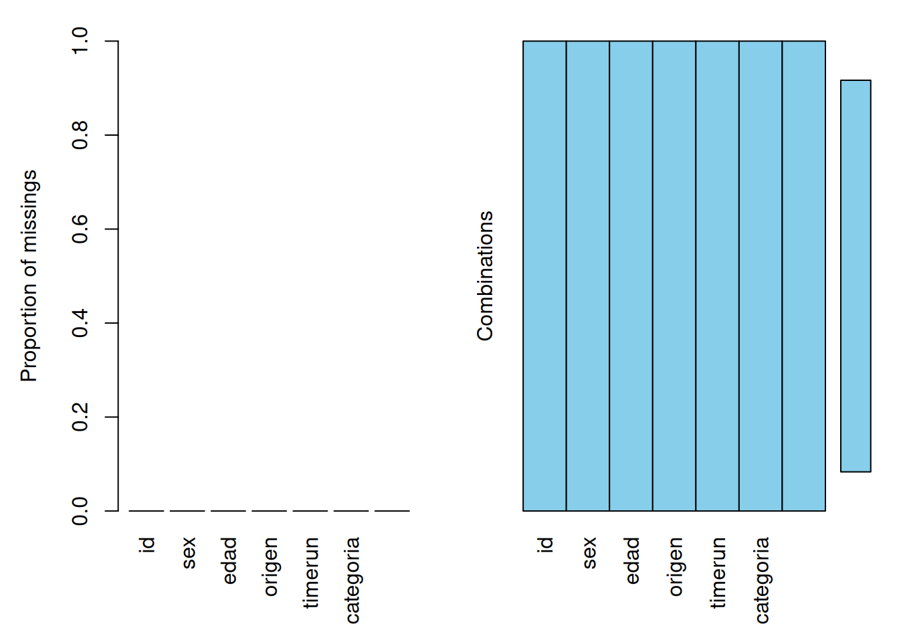
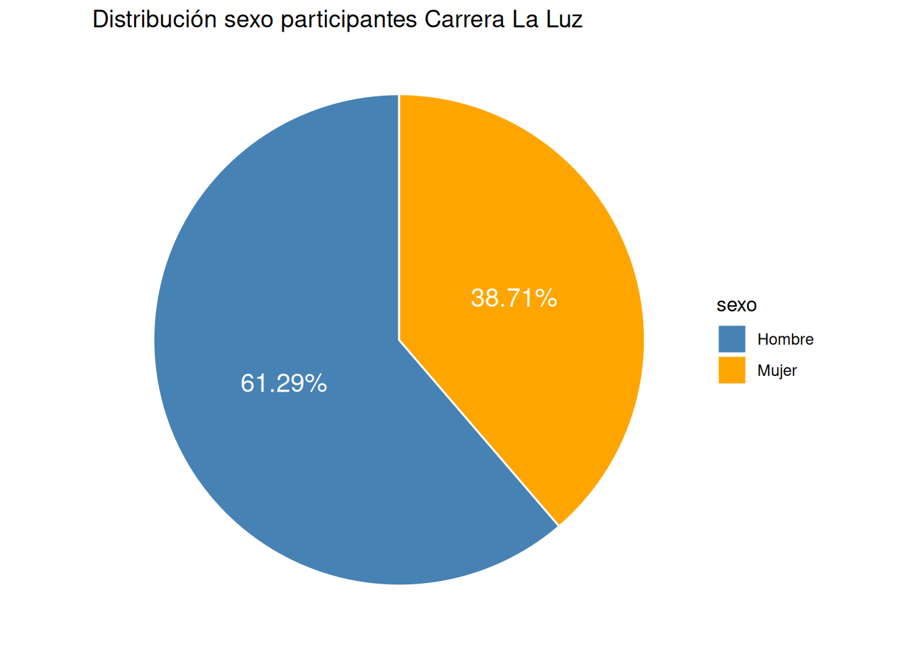
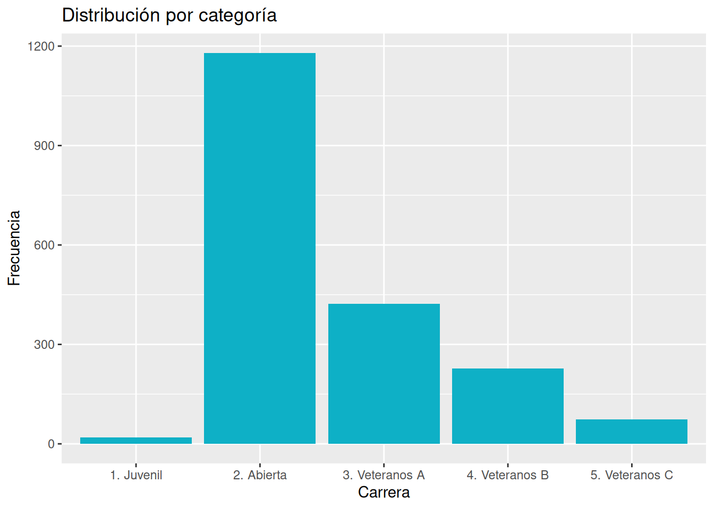
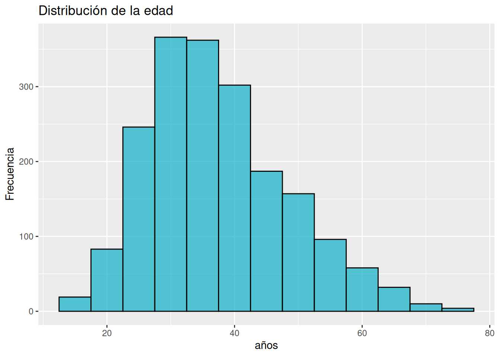
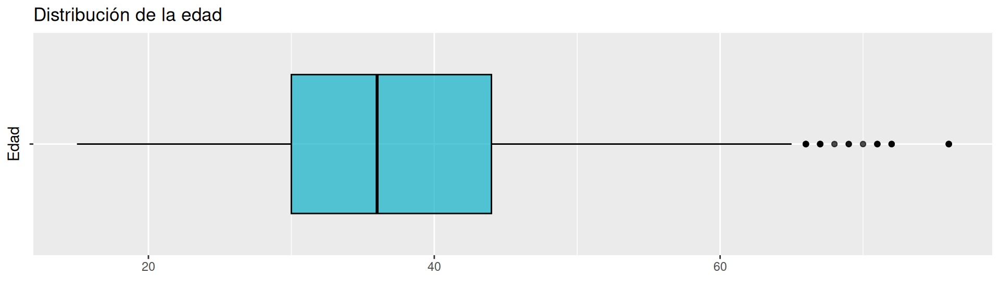
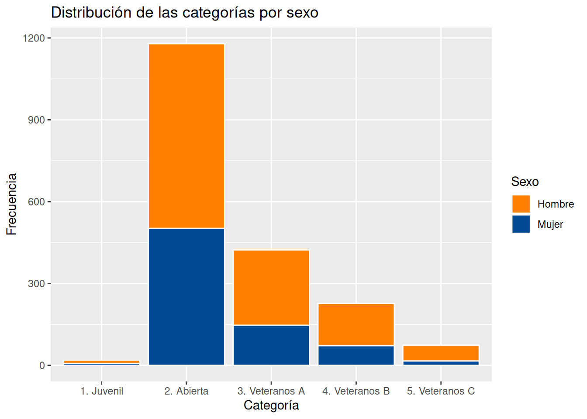
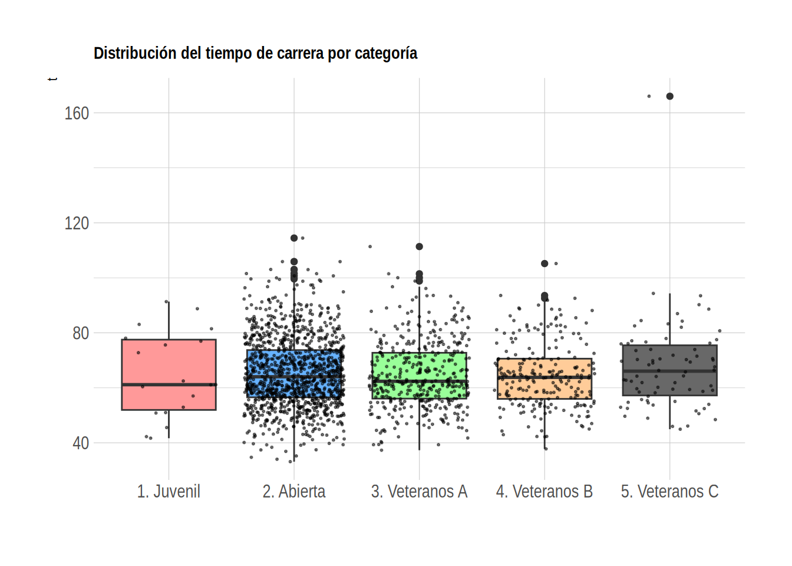
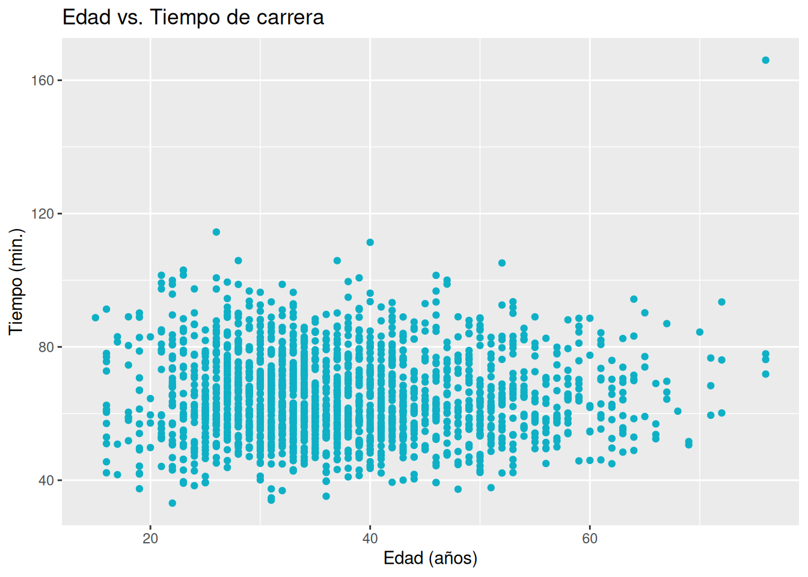

Se requiere realizar un análisis descriptivo de la información
contenida en la data CarreraLuz22, para lo cual se requiere
importar la data contenida en paqueteMETODOS.
library(paqueteMETODOS)
data("CarreraLuz22")
str(CarreraLuz22)tibble [1,922 × 7] (S3: tbl_df/tbl/data.frame)
$ id : num [1:1922] 1 2 3 4 5 6 7 8 9 10 ...
$ sex : chr [1:1922] "Hombre" "Hombre" "Hombre" "Hombre" ...
$ edad : int [1:1922] 22 31 31 36 32 48 31 19 51 24 ...
$ origen : chr [1:1922] "Sevilla" "Sevilla" "Yumbo" "Cali" ...
$ timerun : num [1:1922] 1988 2041 2083 2112 2213 ...
$ categoria : chr [1:1922] "2. Abierta" "2. Abierta" "2. Abierta" "2. Abierta" ...
$ nacionalidad: chr [1:1922] "COL" "COL" "COL" "COL" ...Inicialmente se examina la data con el fin de detectar datos faltantes
colSums(is.na(CarreraLuz22)) id sex edad origen timerun categoria
0 0 0 0 0 0
nacionalidad
0 Lo cual también se puede validar de manera gráfica
VIM::aggr(CarreraLuz22, cex.axis = 1, cex.lab= 1) # gráficos de datos faltantes
La gráfica indica que no existen datos faltantes en la data.
Se inicia con un análisis univariado, para lo cual se dividen las variables en :
Para el caso de las variables cualitativas utilizamos tablas y gráficos circulares o de torta para el caso de las variables cualitativas- nominales (sex, origen) y de barras en el caso de las variables - ordinales (categoría)
attach(CarreraLuz22) # esta funcion permite nombrar las variables de manera independiente a la base
summarytools::freq(sex, cumul = FALSE)Frequencies
Freq % Valid % Total
------------ ------ --------- ---------
Hombre 1178 61.29 61.29
Mujer 744 38.71 38.71
<NA> 0 0.00
Total 1922 100.00 100.00El resultado indica que un 61.29% de los participantes eran hombres
library(ggplot2)
library(scales)
t=prop.table(table(sex))
df=as.data.frame(t)
names(df) = c("sexo", "frecuencia")
ggplot(df,aes(x="",y=frecuencia, fill=sexo))+
geom_bar(stat = "identity",
color="white")+
geom_text(aes(label=percent(frecuencia)),
position=position_stack(vjust=0.5),color="white",size=5)+
coord_polar(theta = "y")+
scale_fill_manual(values=c("steelblue","orange"))+
theme_void()+
labs(title="Distribución sexo participantes Carrera La Luz")
summarytools::freq(categoria)Frequencies
Freq % Valid % Valid Cum. % Total % Total Cum.
-------------------- ------ --------- -------------- --------- --------------
1. Juvenil 19 0.99 0.99 0.99 0.99
2. Abierta 1179 61.34 62.33 61.34 62.33
3. Veteranos A 423 22.01 84.34 22.01 84.34
4. Veteranos B 227 11.81 96.15 11.81 96.15
5. Veteranos C 74 3.85 100.00 3.85 100.00
<NA> 0 0.00 100.00
Total 1922 100.00 100.00 100.00 100.00En este caso como la variable es ordinal, tiene sentido la inclusión de las dos últimas columnas que corresponden a las frecuencias acumuladas.
Por un lado se puede indicar que la categoría abierta representa el mayor porcentaje de los participantes (61.33%), mientras que la juvenil constituye la categoría con menor participación alcanzando casi el 1%.
library(ggplot2)
ggplot(CarreraLuz22, aes(x = categoria)) +
geom_bar(fill = "#0EB0C6") +
labs(title = "Distribución por categoría",
x = "Carrera",
y = "Frecuencia")
La representación gráfica, permite visualizar las diferencias entre las frecuencias de las categorías participantes en la carrera.
En el caso de las variables cuantitativas se construye un resumen de indicadores y su representación gráfica puede ser un histograma, gráfico de densidad, diagrama de cajas, diagrama de puntos, diagrama de lineas
summarytools::descr(edad)Descriptive Statistics
value
N: 1922
value
----------------- ---------
Mean 37.45
Std.Dev 10.90
Min 15.00
Q1 30.00
Median 36.00
Q3 44.00
Max 76.00
MAD 10.38
IQR 14.00
CV 0.29
Skewness 0.64
SE.Skewness 0.06
Kurtosis 0.11
N.Valid 1922.00
Pct.Valid 100.00El resumen de indicadores se puede dividir en cuatro partes:
Mean 37.45 # media Median 36.00 # mediana
Los valores de media y mediana son similares, lo que indica posiblemente una forma simétrica. En este caso dado que la media es más conocida, se utiliza este indicador para describir la muestra.
En promedio los participantes tienen en promedio 37 años.
Std.Dev 10.90 # desviación estandar IQR 14.00 # rango intercuartilico - Q3-Q1 CV 0.29 # coeficiente de variación
Estos valores dan una idea de la dispersión de los datos, es decir que tanto se parecen o se diferencian. La desviación estándar como también el rango (max-min) y el rango intercuartilico IQR, corresponde a valores útiles al realizar comparación de grupos.
El coeficiente de variación en cambio permite comparar la magnitud de la desviación estándar en comparación con la media de la variable. En este caso (CV = 0.29) el indicador corresponde a un grupo heterogéneo.
Skewness 0.64 # sesgo SE.Skewness 0.06 # error estándar del sesgo Kurtosis 0.11 # curtosis
En cuanto al valor del indicador de sesgo (0.64), representa una leve simetría positiva y un valor de curtosis similar al estándar representado por la distribución normal estándar.
Min 15.00 # mínimo Q1 30.00 # percentil 25 Median 36.00 # percentil 50 Q3 44.00 # percentil 75 Max 76.00 # máximo
Los indicadores de posición nos ayudan a comparar un valor con estos indicadores de referencia. Por ejemplo un atleta con un valor de 35 minutos tienen una posición en el orden de llegada entre el 25% y el 50%, estando mas cercano al centro.
En resumen se utilizan los indicadores para resumir los valores de una variable aleatoria. Para el caso de la edad de los corredores podría decirse:
Se presentaron 1922 atletas que tenían en promedio 37 años, conformando un grupo heterogéneo (CV 29%) y una distribución levemente asimetrica positiva.
# Crear un histograma para la variable 'edad' en ggplot2
ggplot(CarreraLuz22, aes(x = edad)) +
geom_histogram(binwidth = 5, fill = "#0EB0C6", color = "black", alpha = 0.7) +
labs(title = "Distribución de la edad",
x = "años",
y = "Frecuencia")
El histograma permite visualizar tanto distribución de la variable, como también el rango
# Crear un diagrama de cajas para la variable 'edad' en ggplot2
ggplot(CarreraLuz22, aes(x = edad, y = "")) +
geom_boxplot(fill = "#0EB0C6", color = "black", alpha = 0.7) +
labs(title = "Distribución de la edad",
x = "",
y = "Edad")
El diagrama de cajas permite visualizar los datos atípicos (punto ubicados a la izquierda de la gráfica)
Después de realizar una análisis unidimensional, puede ser necesario realizar análisis por grupos de variables . En este caso se pueden presentar las siguientes combinaciones:
summarytools::ctable(categoria, sex)Cross-Tabulation, Row Proportions
categoria * sex
---------------- ----- -------------- ------------- ---------------
sex Hombre Mujer Total
categoria
1. Juvenil 12 (63.2%) 7 (36.8%) 19 (100.0%)
2. Abierta 677 (57.4%) 502 (42.6%) 1179 (100.0%)
3. Veteranos A 276 (65.2%) 147 (34.8%) 423 (100.0%)
4. Veteranos B 155 (68.3%) 72 (31.7%) 227 (100.0%)
5. Veteranos C 58 (78.4%) 16 (21.6%) 74 (100.0%)
Total 1178 (61.3%) 744 (38.7%) 1922 (100.0%)
---------------- ----- -------------- ------------- ---------------library(ggplot2)
ggplot(CarreraLuz22, aes(x = categoria, fill = sex)) +
geom_bar(position = "stack", color = "white") +
scale_fill_manual(values = c("#FF7F00", "#034A94")) +
labs(title = "Distribución de las categorías por sexo",
x = "Categoría",
y = "Frecuencia",
fill = "Sexo")
# install.packages("doBy")
library(doBy)
CarreraLuz22$t = timerun/60
summaryBy(t ~ categoria, data = CarreraLuz22,
FUN = c(mean, median, sd, min, max))# A tibble: 5 × 6
categoria t.mean t.median t.sd t.min t.max
<chr> <dbl> <dbl> <dbl> <dbl> <dbl>
1 1. Juvenil 65.0 61.1 15.7 41.7 91.3
2 2. Abierta 65.5 64.0 12.7 33.1 114.
3 3. Veteranos A 64.7 62.4 12.2 37.3 111.
4 4. Veteranos B 64.5 63.8 11.9 37.8 105.
5 5. Veteranos C 67.6 66.0 16.7 45.0 166. library(dplyr)
library(ggplot2)
library(viridis)
library(hrbrthemes)
# Plot con colores en las cajas
CarreraLuz22 %>%
ggplot(aes(x = categoria, y = t, fill = categoria)) +
geom_boxplot() +
scale_fill_viridis(discrete = TRUE, alpha = 0.) +
geom_jitter(color = "black", size = 0.4, alpha = 0.5) +
theme_ipsum() +
theme(
legend.position = "none",
plot.title = element_text(size = 11)
) +
ggtitle("Distribución del tiempo de carrera por categoría") +
xlab("") +
scale_fill_manual(values = c("#FF9999", "#66B2FF", "#99FF99", "#FFCC99", "#686868")) # Puedes ajustar los colores según tus preferencias
El gráfico permite visualizar una mayor cantidad de participantes en la categoría Abierta y también que la distribución de los tiempo de carrera es similar para todas las categorías. También se puede observar que el dato atípico corresponde a un atleta de la categoría Veteranos C.
Para realizar un análisis bivariado en este caso utilizamos el coeficiente de correlación que permite medir la asociación lineal entre las dos variables numéricas, es decir que tanto se ajustan las dos variable a una linea recta. Esta relación será estudiada con más detalle en el curso de Modelos Estadísticos.
cor(CarreraLuz22$edad, CarreraLuz22$t)[1] -0.009211491Este resultado nos indica que no existe ninguna relación entre la edad y el tiempo de carrera de los participantes, lo cual se puede observar en el siguiente gráfico.
library(ggplot2)
# Asumiendo que "Carrera" es tu conjunto de datos
# Asegúrate de tener las variables "edad" y "t" en tus datos
# Plot de puntos con color azul
ggplot(CarreraLuz22, aes(x = edad, y = t)) +
geom_point(color = "#0EB0C6") + # Color azul
labs(title = "Edad vs. Tiempo de carrera",
x = "Edad (años)",
y = "Tiempo (min.)")